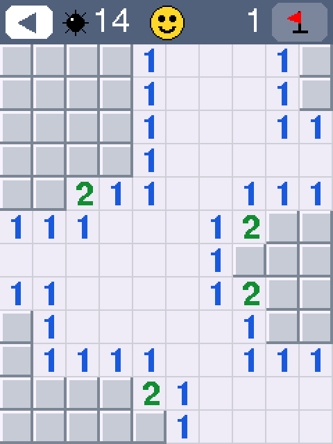
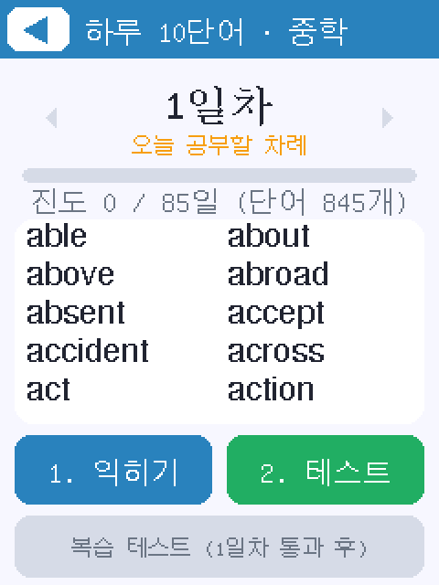
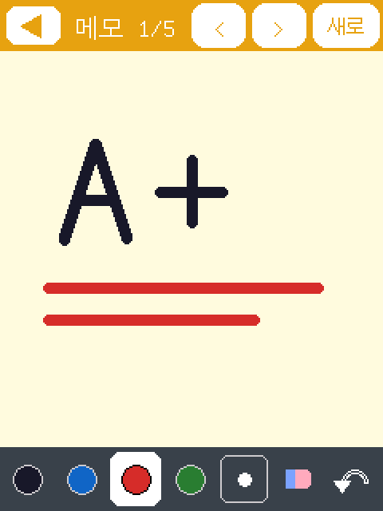
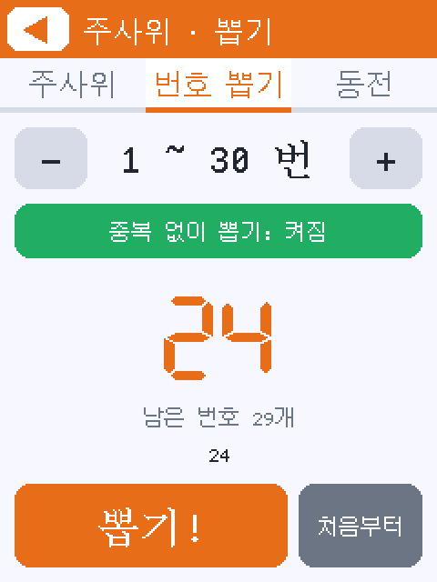
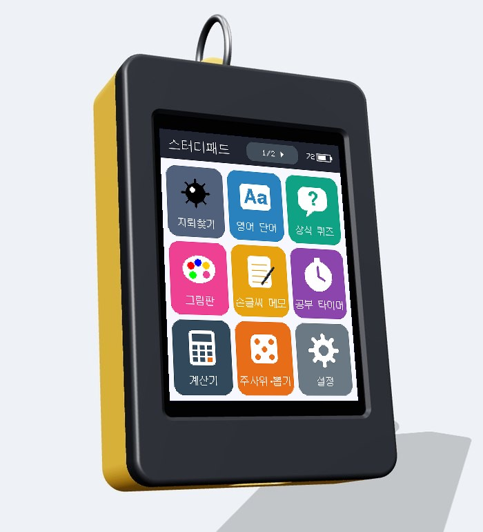
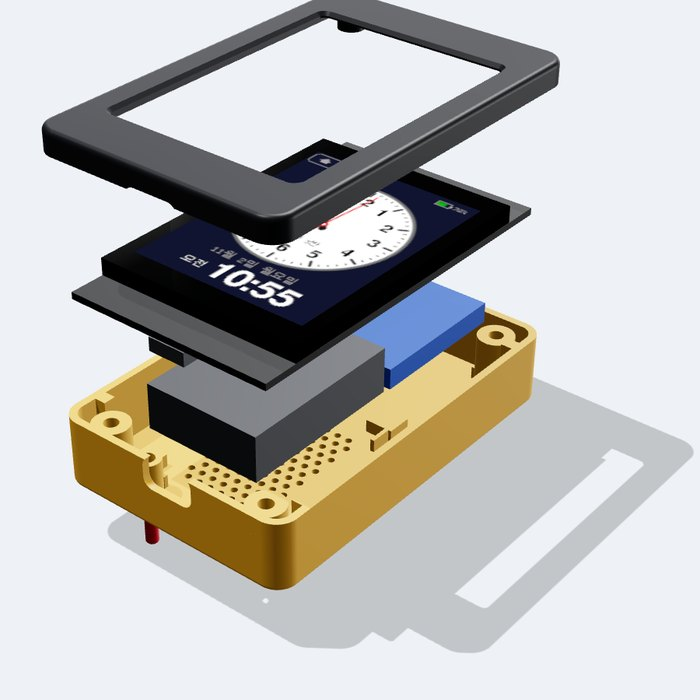

어디로 갈까요
처음이라면 왼쪽부터 차례대로 보면 돼요.
아두이노 IDE 설치부터 보드 매니저, 라이브러리 매니저, 업로드까지 그림으로 한 단계씩.
교실 TV에 띄워 다 함께 따라 하는 34장 슬라이드. 화살표 키나 화면을 넘겨서 봐요.
지뢰찾기, 하루 10단어, 상식 퀴즈, 그림판, 타이머… 10가지 앱을 쓰는 방법.
단어 넣기, 퀴즈 만들기, 효과음 바꾸기. 숫자와 글자만 바꿔서 내 기기로 만들어요.
보드·배터리·스피커를 한 몸에 넣는 3D 프린팅 키링 케이스. 단색 STL 파일.
빨간 오류 글자가 나왔거나, 포트가 안 보이거나, 화면이 이상할 때 여기부터.
만드는 순서
처음 한 번은 설치에 시간이 걸려요. 그다음부터는 고치고 올리기만 반복하면 돼요.
들어 있는 앱
홈 화면 두 쪽에 앱 10개가 있어요. 그림은 실제 코드로 그린 보드 화면이에요.










케이스 만들기 — 3D 프린팅
보드·배터리·스피커를 한 몸에 넣는 키링형 케이스예요. 교탁 도우미 연수(ES3C28P 보드)에서 쓴 케이스가 이 보드에도 그대로 맞아요. 볼트 4개로 조립하고, 서포트 없이 출력해요.



출력 — 59.6×90.4×22mm · PETG 또는 PLA · 0.2mm · 벽 3줄 · 채움 20% · 파일이 이미 출력 방향이라 돌리지 않고 그대로 · BOOT 플런저는 작으니 2~3개
준비물 — 3.7V 리튬폴리머 배터리(1.25mm 2핀, 바닥 30×35mm·두께 10mm 이하, 예: 603035 600mAh) · 소형 스피커(29×41×11mm 이하) · M3×12 렌치볼트 4개와 2.5mm 육각렌치 · 양면테이프
조립 — ① BOOT 플런저를 뒷 케이스 안쪽에서 끼우기 ② 스피커를 아래 포켓, 배터리를 위 포켓에 양면테이프로 고정 ③ 커넥터를 보드에 꽂고 화면이 위로 오게 기둥 4개 위에 올리기(USB-C가 아래 구멍 쪽) ④ 앞 베젤을 덮고 뒤에서 볼트 4개 체결. 볼트가 기둥에 나사산을 내며 들어가니 천천히, 너무 세게 조이지 않아요.
배터리를 꽂기 전에 보드 단자 옆 + 표시와 빨간 선이 같은 쪽인지 꼭 확인해요.
준비물
한 사람당 아래 준비물이 필요해요.
| 준비물 | 설명 |
|---|---|
| 2.8인치 ESP32 터치 보드 | ESP32-32E 칩이 들어 있는 2.8인치 디스플레이 보드(E32R28T). 터치가 있는 제품이어야 해요. |
| USB-C 케이블 | 데이터 전송이 되는 케이블. 충전 전용 케이블은 컴퓨터가 보드를 못 찾아요. |
| 노트북 | 윈도우 10 또는 11. 인터넷이 되어야 설치할 수 있어요. |
| 터치펜 | 저항막 터치라서 손가락보다 펜이 훨씬 정확해요. |
| 배터리 (선택) | 3.7V 리튬 폴리머, 1.25mm 2핀 커넥터. 없으면 USB 전원으로 써요. |
| 스피커 (선택) | 1.25mm 2핀 소형 스피커. 있어야 효과음이 나요. |
| 케이스 (선택) | 3D 프린터로 출력한 케이스 + M3×12 렌치볼트 4개. → 케이스 만들기 |
동아리 시간 약속
- 화면은 터치펜으로 눌러요. 손톱이나 볼펜으로 긁으면 화면이 상해요.
- 배터리를 꽂기 전에 +와 − 방향을 선생님께 확인받아요. 거꾸로 꽂으면 보드가 고장 나요.
- 코드를 고치기 전에 원래 폴더를 복사해 두어요. 망가지면 언제든 처음으로 돌아갈 수 있어요.
- 빨간 오류 글자가 나오면 당황하지 말고 맨 처음 나온 error 줄을 읽어요. 안 될 때에 대부분 답이 있어요.
- 보드에 이름 스티커를 붙여서 친구 보드와 섞이지 않게 해요.